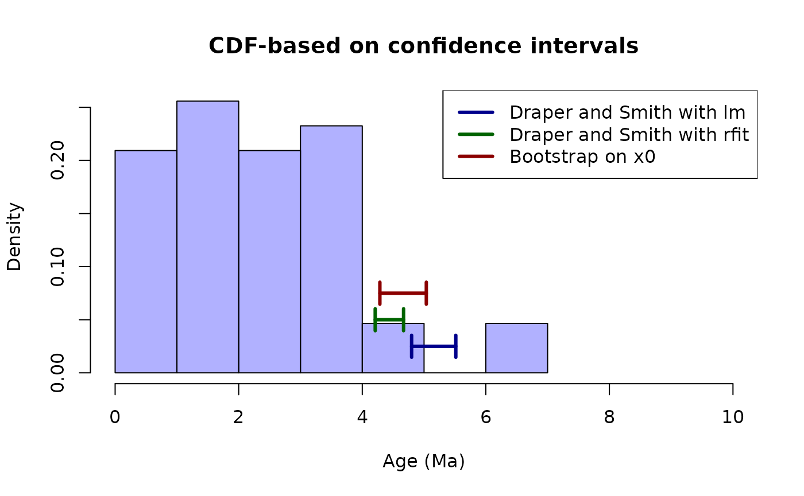

Inference using x-intercept methods
Gustavo A. Ballen and Sandra Reinales
Source:vignettes/x_intercept.Rmd
x_intercept.RmdThese approaches are based on the assumption that the cumulative the pattern of appearance of divergence time events from an unknown time onwards can inform on the event time. A regression model with an additional parameter -intercept may be thought of as an estimator for such point in time given the trend present in the linear model. Estimation of uncertainty regions such as confidence intervals on the -intercept can be even more useful than the point estimate itself; such regions can be constructed by fitting an empirical cumulative density function.
Events in time start at some unobserved point and their realisations continue until the process finishes. Because they are delayed by some quantity after the generator process starts, we can use the pattern of occurrence in time in order to estimate the origination time. They can be described as a distribution regardless of its generator process, which will follow a probability density function (PDF) , with an associated cumulative density function (CDF) . We can fit an empirical CDF and then use a linear regression model. The only case where a CDF would be truly linear would be in the case of a uniform distribution where which implies that the empirical data in time follow a uniform distribution. For any other case, a fitted CDF would be a non-linear, and thus a linearisation should be applied to it.
There are several methods available for linearising data (e.g., applying the logarithm, the square and cubic roots, the arcsine, or the reciprocal to the raw data). In the case of CDF fitting, we need to guarantee that the data are linear regardless of the PDF in order to estimate parameters of the model and thus the procedure is appropriate. After model fitting, a back transformation would be necessary for representing the time value of interest in real space.
The linear model has the form where is the slope and is the -intercept. However, we are not interested in any of these parameters but instead in a third one, the -intercept, that is defined as the point in where . This parameter can be defined by letting in the equation and thus allows us to find the point at which the data began to be generated.
Several methods have been proposed for estimating the uncertainty on the -intercept estimate, from the intuitive inverse regression to bootstraping methods. According to Seber and Lee (2013)1 this problem has long been discussed in the statistical literature without much consensus, although some are of interest due to theoretical appeal, ease of implementation, or simplification of assumptions. Uncertainty on the estimate of the -intercept can be obtained through Taylor series simplification for symmetric intervals.
Another approach by Draper and Smith (1998)2 allows the calculation asymmetric confidence intervals by projecting the values of the confidence region around the linear model on the -axis by manipulation of the curves describing the confidence region, what gives where , is the slope, is the sum of squares of , is the -statistic with n-2 degrees of freedom and at significance level, is the standard deviation, is the estimation of the -intercept, and is the mean of . Here we need to fit a linear model in order to use the curves for the confidence region, and we can use classical least square models or robust non-parametric regression Kloke and McKean (2014)3.
It is also possible to use bootstrapping in order to estimate the variance and thus the confidence interval in asymmetric cases such as this one. Instead of using the estimates from a single fitted model on the coordinates of the empirical CDF, this method fits multiple models with random subsamples in order to construct a collection of estimated values the -intercept and this provides a confidence interval.
The package tbea implements estimation of the confidence
interval for the
intercept
using the method of Draper and Smith (1998) as well as estimation via
bootstrap. Both require a linear model which can be set to one of the
following: either ordinary least squares, or a robust linear model Kloke
and McKean (2014).
# load the package
library(tbea)
# load the data
data(andes)
ages <- andes$ages
ages <- ages[complete.cases(ages)] # remove NAs
ages <- ages[which(ages < 10)] # remove outliers
# Draper-Smith, OLS
draperSmithNormalX0 <- xintercept(x=ages, method="Draper-Smith",
alpha=0.05, robust=FALSE)
# Draper-Smith, Robust fit
draperSmithRobustX0 <-xintercept(x=ages, method="Draper-Smith",
alpha=0.05, robust=TRUE)
# bootstrap, OLS
bootstrapNormalX0 <- xintercept(x=ages, method="Bootstrap",
p=c(0.025, 0.975), robust=FALSE)
# bootstrap, Robust fit
bootstrapRobustX0 <- xintercept(x=ages, method="Bootstrap",
p=c(0.025, 0.975), robust=TRUE)
# plot the estimations
hist(ages, probability=TRUE,
col=rgb(red=0, green=0, blue=1, alpha=0.3),
xlim=c(0, 10), main="CDF-based on confidence intervals",
xlab="Age (Ma)")
# plot the lines for the estimator of Draper and Smith using lm
arrows(x0=draperSmithNormalX0$ci["upper"], y0=0.025,
x1=draperSmithNormalX0$ci["lower"], y1=0.025,
code=3, angle=90, length=0.1, lwd=3, col="darkblue")
# plot the lines for the estimator of Draper and Smith using rfit
arrows(x0=draperSmithRobustX0$ci["upper"], y0=0.05,
x1=draperSmithRobustX0$ci["lower"], y1=0.05,
code=3, angle=90, length=0.1,
lwd=3, col="darkgreen")
# plot the lines for the estimator based on bootstrap
arrows(x0=bootstrapRobustX0$ci["upper"], y0=0.075,
x1=bootstrapRobustX0$ci["lower"], y1=0.075,
code=3, angle=90, length=0.1,
lwd=3, col="darkred")
# plot a legend
legend(x="topright", legend=c("Draper and Smith with lm",
"Draper and Smith with rfit",
"Bootstrap on x0"),
col=c("darkblue", "darkgreen", "darkred"),
lty=1, lwd=3)
Both methods produce similar results. Although the method based on robust regression produced a CI wider than the one based on ordinary least squares, the bootstrap CI estimate was as wide as the two former combined. The fact that the bootstraping based on robust estimates is of more general application, it seems more adequate for these situations. It is noteworthy that these inferences are based on the assumption that the events in time are measured without error. However, this assumption relaxes due to the effect of re-sampling and uncertainty in the estimates. According to both estimators, the separation between cis- and trans-Andean areas took place between ca. Ma.
These methods have produced results in line with those based on stratigraphic intervals. However, they allow estimate -intercepts and consequently their confidence intervals that are not necessarily older than the oldest divergence time estimation event. Thus, they are robust to the assumption of measurement without error that is implicit in stratigraphic interval methods. Nevertheless, they are still sensitive to the presence of strong outliers as preliminary analyses showed that the regressions on these data with outliers affected strongly the robust regressions.